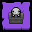

Polty is an enemy added in The Binding of Isaac: Repentance.
Unlike normal enemies, Polties appear from inside Buckets or Urns in the current room. They then pick up the obstacle they were under, fly towards Isaac, and then throw it at him. For the rest of the room, it will fly around the room, stopping to pick up more rocks, props, poops, and other obstacles and throw them at Isaac. Thrown obstacles have the same chance to release pickups or enemies as if they had been destroyed normally. Once there are no more rocks to throw at Isaac, they will leave the room.
Polties prefer to pick up Buckets and TNT over normal rocks, with the exception of Metal Blocks and Spiked Rocks, which they cannot pick up. If there's a Tinted Rock, it will avoid picking it up until there's no other rocks left to throw. When it finally does pick it up, it will fly offscreen with it instead of throwing it at Isaac. If the Polty is killed before it successfully runs away with the rock, it will give its contents like normal.
Destroying the Bucket or Urn which a Polty is hiding beneath will cause it to spawn and then behave normally.
Once 
Variants
Kineti
Kineti is the  Mausoleum variant of a Polty and behave similarly to their counterpart, with the exception that they use telekinesis to bring obstacles toward them rather than moving towards them and picking them up manually. The obstacles can damage Isaac while being pulled towards the Kineti.
Mausoleum variant of a Polty and behave similarly to their counterpart, with the exception that they use telekinesis to bring obstacles toward them rather than moving towards them and picking them up manually. The obstacles can damage Isaac while being pulled towards the Kineti.
Kinetis will prioritize picking up rocks that would hit Isaac while being pulled towards itself. They are also knocked back by the force of the rock they carry once it enters their hands. If there are no more obstacles for them to pick up, similar to Polties, they will exit the room, and if they choose to pick up a Tinted Rock, they will fly offscreen with it instead of throwing it at Isaac.
Trivia
- The Polty first appeared in the Antibirth mod where it had 20 hp and 3 stage hp.
- "Polty" is a nickname of the word "poltergeist" as it behaves quite similarly to one. In lore, poltergeists are known to be "responsible for physical disturbances, such as loud noises and objects being moved or destroyed."
- "Kineti" is a shortened version of the word "kinetic," which describes the form of energy that an object possesses due to its motion.
Bugs
| Petrifying Kinetis while they are pulling a rock towards them causes the rock to keep flying and can cause it to fly out of the room. |